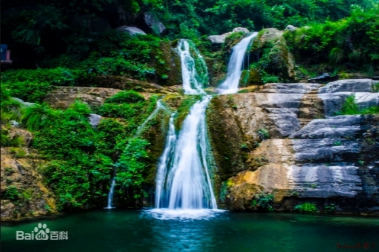

云台山景区
因外界各种原因给您带来的麻烦，我们在此感到深深的抱歉，感谢您的谅解，祝您游玩愉快！
红石峡
2020.02.07
红石峡（又名温盘峪），位于子房湖南，全长2000米，峡谷深藏于地下68米 [7] 。由红岩构成，属中国丹霞地貌峡谷景观，崖壁呈赤红色，故称“红石峡”。红石峡里分布有“白龙潭”、“黄龙潭”、“青龙潭”、“黑龙潭”、“卧龙潭”、“眠龙潭”、“醒龙潭”、“子龙潭”、“游龙潭”，构成“九龙溪”。还有“幽瀑”、“穿石洞”、“相吻石”、“双狮汲水”、“孔雀开屏”、“棋盘山”等景观。红石峡南端有一狭窄的峡谷称为“一线天”，有瀑高50余米的白龙瀑布。
潭瀑峡
2020.02.07 潭瀑峡（又名小寨沟），处于云台山北部略偏西，是子房河的一个源头。潭瀑峡长2000米，南北走向。潭瀑峡内一条溪水叫小龙溪。主要景点有渡仙潭、情人瀑、金龙卧波、丫字瀑、清漪池、水帘洞、碧玉潭、试剑石、蝴蝶岩、龙凤壁等，呈现出飞瀑、走泉、彩潭和山石景观。因潭瀑峡“三步一泉、五步一瀑、十步一潭”，故称“潭瀑峡” 。
泉瀑峡
2020.02.07
泉瀑峡（又名老潭沟），全长约3000米，沿沟上行400米，是亚洲最高大瀑布——云台天瀑，落差达314米。云台天瀑最宽可有十多米宽的瀑面。是云台山风景区的标志性景观之一。
茱萸峰
2020.02.07
茱萸峰，俗名小北顶，又名覆釜山，因其形貌似一只倒扣的大锅由而得名。海拔1297.6米，峰顶有真武大帝庙、天桥、云梯。唐代诗人王维《九月九日忆山东兄弟》：“独在异乡为异客，每逢佳节倍思亲，遥知兄弟登高处，遍插茱萸少一人。”即于此峰有感而作。峰腰有药王洞，深30米，直径10米，相传是唐代药王孙思邈采药炼丹的地方，药王洞口有古红豆杉一株，高约20米，树干粗达3人合抱，枝繁叶茂，树龄在千年左右。另有“厨灶洞”、“阎王洞”、“黄泥洞”等10余个洞穴。2015年9月20日，玻璃栈道正式对游客开放。